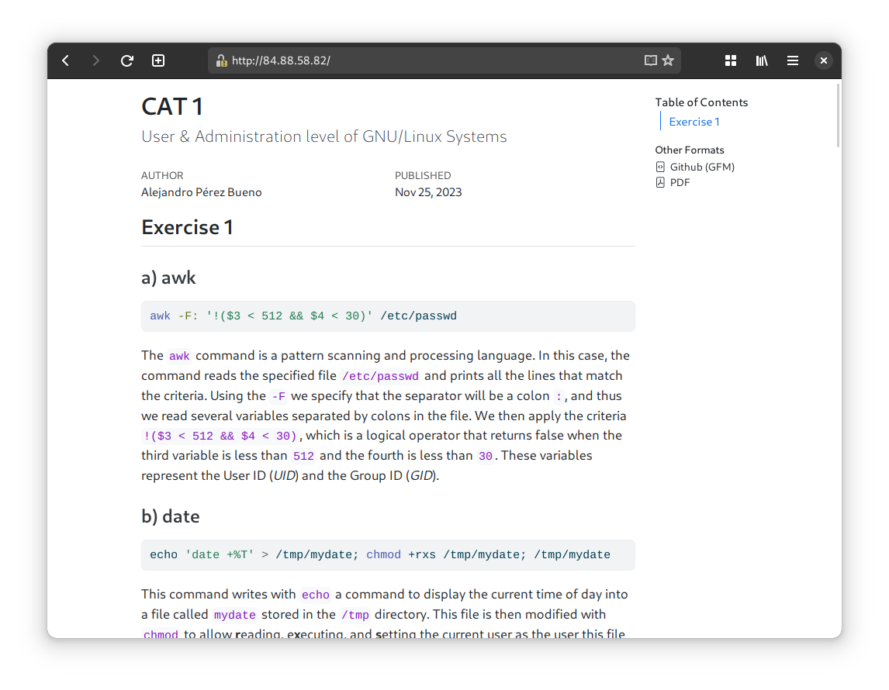

CAT 2
Cloud Computing
Exercise 1
Basic VM configuration
First and foremost, it is necessary to create the VM and access it with SSH:
ssh -i .ssh/id_rsa root@84.88.58.81 -p 55000In order to configure the VM with minimal configuration, one must do the following (as root):
1apt update && apt upgrade -y
2hostnamectl set-hostname tux
3echo "127.0.0.1 tux.ccuoc.org tux" >> /etc/hosts
4apt install nginx apache2-utils jmeter -y- 1
- Update the system.
- 2
-
Set hostname to
tux. - 3
-
Change domain to
ccuog.org. - 4
-
Install
nginx,apache2-utilsandjmeter.
Now everything has been set up (see Figure 1).
Set up web service
The website I created is a web version of the first practice I submitted (I write them in quarto, a markdown tool that does wonders for these kinds of assignments). It is fairly complex as it has custom images, code formatting, sidebars and other non-textual content.
First, copy the website and its files to the /var/www/html directory:
1cp README.html /var/www/html/index.html
2cp -r README_files/ /var/www/html/
3cp -r img /var/www/html/- 1
- Main HTML file.
- 2
- Extra files from quarto to make the website pretty.
- 3
- Images from screenshots I made in the previous CAA.
Then start the nginx service:
systemctl enable --now nginxAt this point our website is up and running! We can check that it is working with ab (ApacheBenchmark) and with JMeter (see Figure 2).
Note how in the command from Figure 2 (a) I did not specify the IP of VM, but the domain. This is merely to prove that it is possible to open the website this way too.
You can also simply open a browser on your local machine and enter the IP of the Remote (see Figure 3).
Exercise 2
Basic VM configuration
The VM from the previous exercise has been deleted, so nothing from the previous exercise will be reused in this one.
Three VMs have to be configured:
- A machine called
frontendwith a private and a public NIC. - A machine called
worker1with a private NIC. - A machine called
worker2with a private NIC.
On all of them, we have to do the following:
- Update packages and install
apache2. - Set hostname and the hosts file appropriately following the same scheme as in the prior exercise.
- Specify the private IPs and domain names for the other VMs in all three machines, as follows:
192.168.0.7 frontend
192.168.0.8 worker1
192.168.0.6 worker2You can see how I have set up these VMs in OpenNebula (see @on-vms-ex2).
Frontend setup
Edit the configuration file /etc/apache2/sites-available/000-default.conf adding the following lines inside the VirtualHost section:
<Proxy balancer://mycluster>
BalancerMember http://worker1:80
BalancerMember http://worker2:80
ProxySet lbmethod=byrequests # or ProxySet lbmethod=bytraffic
</Proxy>
ProxyPass /balancer-manager !
ProxyPass / balancer://mycluster/
ProxyPassReverse / http://frontend.ccuoc.org/
ProxyPreserveHost On
<Location /balancer-manager>
SetHandler balancer-manager
</Location>This configuration sets a balancer for the two websites hosted on the worker VMs with a certain balancer algorithm (installed as a module using a2enmod). It also enables the use of the balancer-manager extension.
Workers setup
Copy the different websites and their necessary files to each of the worker VMs’ /var/www/html directory. For this I picked the following:
- For
worker1VM: Same site from the previous website. - For
worker2VM: Similar site from another project.
Testing the results
Once all 3 VMs are up and running, let’s make sure that they all three have the apache service started and updated to the latest changes made in the configuration files. To do so, we will restart the server:
systemctl enable apache2
systemctl restart apache2Then, using ab like in the previous exercise we can benchmark the two balancing algorithms we are to compare:
byrequests: distributes traffic evenly to every worker. In this case it would be50/50.bytraffic: distributes the workload based on the load of each worker.
We will compare the two algorithms by running the following command:
ab -n 100 -c 10 <FrontendPublicIP>/ab: The same apache utility used in exercise 1.-n 100: number of petitions made to the server.-c 10: number of concurrent requests made to the server at a time.
As can be seen in the screenshots from Figure 4, bytraffic is more efficient at distributing higher workloads, since fewer requests are lost when compared to the byrequests algorithm.
You can also verify that the balancer located at http://<FrontendPublicIP>/balancer-manager is working (see Figure 5), and that both sites are served in the frontend (see Figure 6).
Exercise 3
For the third exercise, I reused some of the previous configurations. Here is what has changed in the setup:
- Recreated
frontend, without setting up Proxy (I kept running out of space when installingdocker). - Reused
worker1. - Deleted
worker2.
Basic VM configuration
Let’s begin by installing docker on both VMs. According to the docker documentation, we must enter the following commands:
# Add Docker's official GPG key:
sudo apt-get update
sudo apt-get install ca-certificates curl gnupg
sudo install -m 0755 -d /etc/apt/keyrings
curl -fsSL https://download.docker.com/linux/debian/gpg | \
sudo gpg --dearmor -o /etc/apt/keyrings/docker.gpg
sudo chmod a+r /etc/apt/keyrings/docker.gpg
# Add the repository to Apt sources:
echo \
"deb [arch=$(dpkg --print-architecture) \
signed-by=/etc/apt/keyrings/docker.gpg] https://download.docker.com/linux/debian \
$(. /etc/os-release && echo "$VERSION_CODENAME") stable" | \
sudo tee /etc/apt/sources.list.d/docker.list > /dev/null
sudo apt-get updateAnd then install docker and other related utilities:
sudo apt-get install docker-ce docker-ce-cli containerd.io \
docker-buildx-plugin docker-compose-pluginTo set up a swarm in docker, you can do the following on the frontend V:
docker swarm init --advertise-addr 192.168.0.25This gives you a token that can be used on the worker VM as follows:
docker swarm join --token <token> 192.168.0.25:2377Annex


ab
JMeterab and JMeter


lbmethod=byrequests - 50 failed requests
lbmethod=bytraffic - 28 failed requestsab -n 100 -c 10 84.88.58.82 with two balancing algorithmsbalancer-manager pageworker1 in balancer-managerbalance-manager page
worker1 accessed from frontend
worker2 accessed from frontendfrontend```